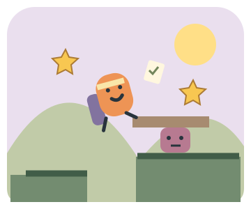

腦內開了 87 個分頁，腳下只有一條主線。
過動兒
大冒險支線很多，終點也要到。
背上小背包，跳過裂縫、踩扁通知怪。
可以繞路撿星星，但三件主線物品要一起帶到終點！

01 出門三件組
鑰匙、錢包、手機，一個都不能少。
02 分頁森林
草稿散在高低平台，跳上去撿回來。
03 主線交付城
帶著目的、操作與證據，衝進終點。
← →／A D 移動，空白鍵／↑／W 跳躍，P／Esc 暫停。手機按住方向鍵、點跳躍。黃墊自動彈高，從上方踩怪可消除；平台可從下方穿過。旗子會記住本關檢查點，掉落或撞怪損失一顆心。
虛構跑跳喜劇，不是症狀測驗。無帳號、不儲存、不上傳；重新整理即重來。
生命 主線 0 / 3星星 0時間 90
分頁先別再開了。
角色、怪物與倒數都已暫停。
紙片＝主線必收 · 星星＝自由支線 · 旗子＝重生點 · 黃墊＝自動彈跳